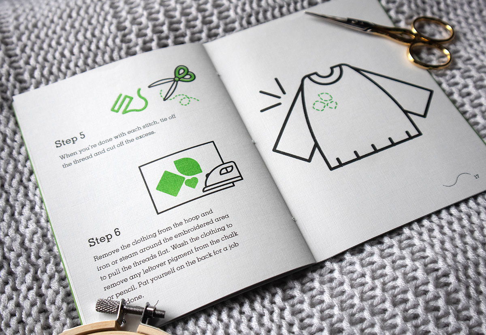
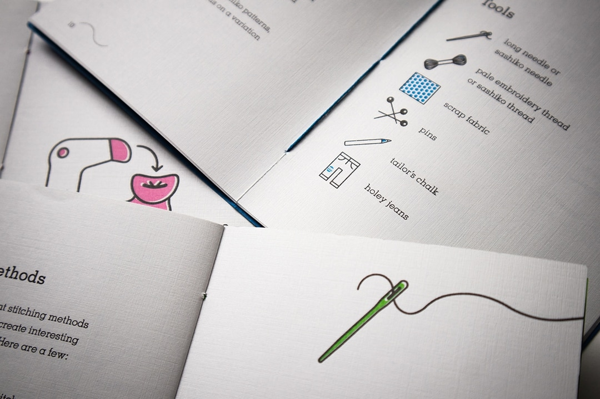
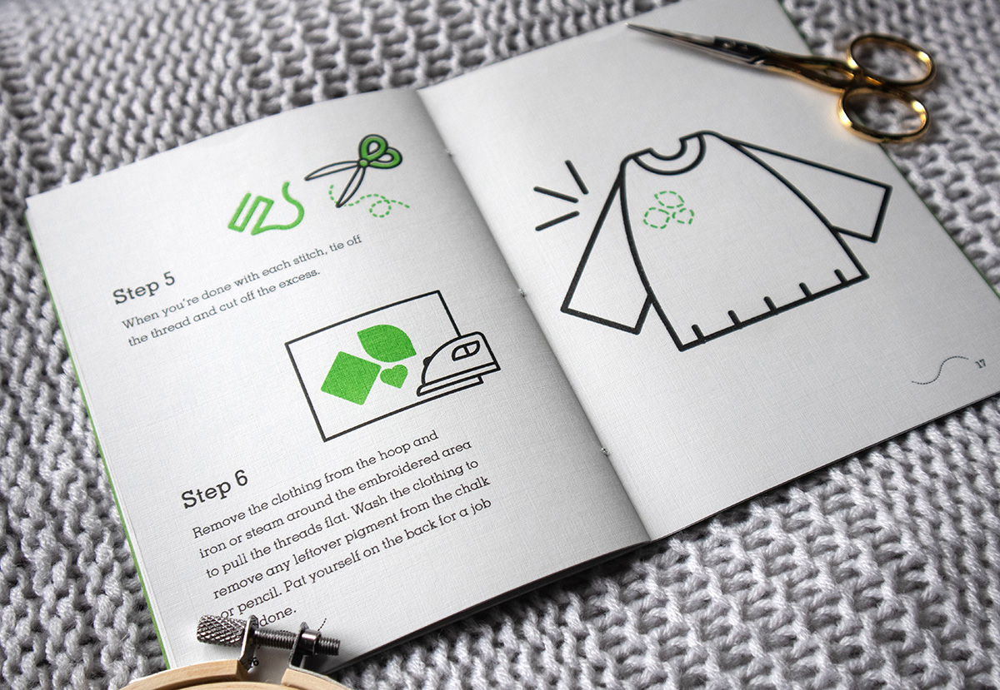
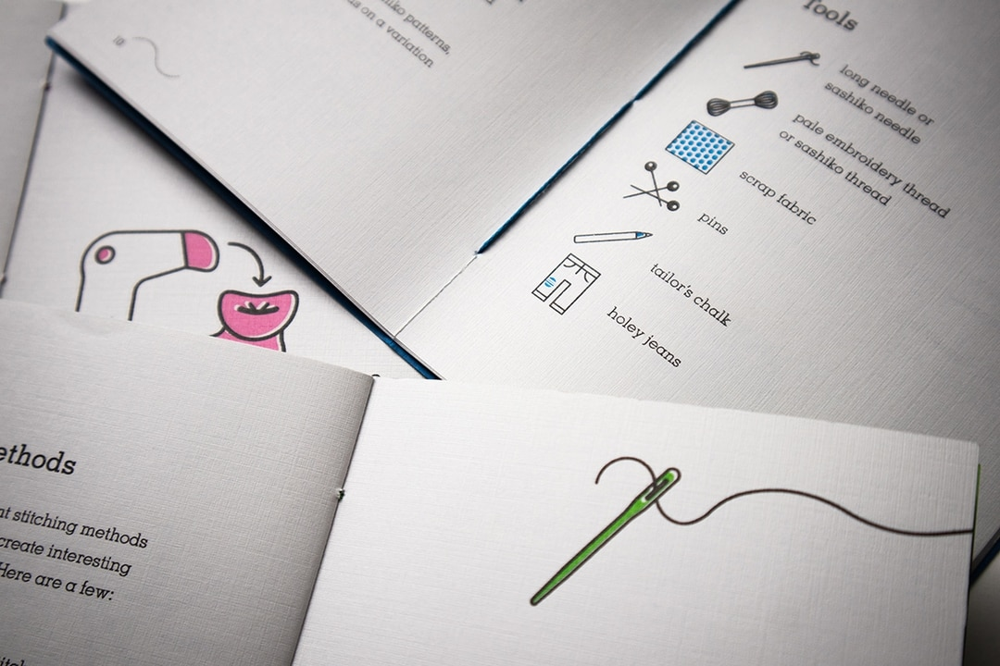

Motion Graphics
Yes Yes No
Year
2019
Contributions
Storyboard, Motion Graphics, Branding
Deliverables
Title Sequence
Hosted by Alex Goldman and P.J. Vogt, Reply All was a Gimlet Media podcast that covered intriguing stories about technology and the internet. Yes Yes No was one reoccuring segment on the podcast, a sort of game in which the hosts decode an X (formerly known as tweet) given them by their boss. Because their boss could not decipher the convoluted language born from Twitter culture, the segment is named after the collected responses to the following question: “Do you understand this Tweet ”
This project is student work and is in no way affiliated with Reply All, Gimlet Media or any of the mentioned names.


Fufu and Grits and Goodjuju
Year
2022 – 2023
Contributions
Email Signature, Loading Animation
Deliverables
Logo Animations
These logo animations were created for Goodjuju Studios (and Fufu and Grits following their rebrand) to be used in certain web applications.


Illustration and Animation


Book Design
Re-Sew
Year
2019
Contributions
Illustration, Copy, Design, Photography
Deliverables
Zine (3 volumes)
Re-Sew is a small-run publication that focuses on cloth mending and the importance of sustainability in regards to fashion. The goal of Re-Sew is to advocate for “old” items and diminish the idea of “disposable” clothing. Each booklet focuses on a common mending method.
The interior of each book is printed on Neenah CLASSIC Linen Antique Gray using Risograph printing, which is playful and less harmful to the environment than normal printing. Misalignment is inevitable, but here it enhances one of Re-Sew's core values: an imperfect object is can be just as useful as a “perfect” object. All three books are bundled by a bellyband using a needle for the hyphen in “Re-Sew”
 



Memento
Year
2019
Contributions
Illustration, Design, Photography
Deliverables
Accordion-bound Book
This project relates old objects to books and their abilities to communicate. Even in a deteriorated state, you can tell if an object has been neglected or cherished. The muted palette emphasises the passage of time, and each object is illustrated as a letter to imply that there is an underlying but decipherable message.
It is printed on Speckletone: Madero Beach by French Paper Co. and the end pages are a heavily textured brown paper. It is typeset entirely in Memphis LT Std.
Minusculpts
Year
2019
Contributions
Curation, Copy, Design
Deliverables
Exhibition Catalog
An exhibition catalog for a hypothetical exhibit centered around miniatures and small-scale sculpting. Each book includes a magnifying glass with a ruler, with the idea that it could be used in the exhibit for a better sense of scale and a closer look at the artwork.
Photographic content borrowed from the generous Maggie Rudy.
Branding and Logo Design
Papers for My Acres
Year
2023
Contributions
Branding, Logo Design
Deliverables
Branding Proposal
Proposed branding for a podcast centered around the Black American experience. I proposed a very literal interpretation of the name of the podcast. The logo encorporates the imagery of fields and stamps, while still maintaining a more contemporary look to match the tone of the podcast.
Petite Pan
Year
2019
Contributions
Logo Design, Motion Graphics
Deliverables
Logo and End Tag
A logo for a fictional bakery. The croissant takes the form of a woman's matronly hairdo.